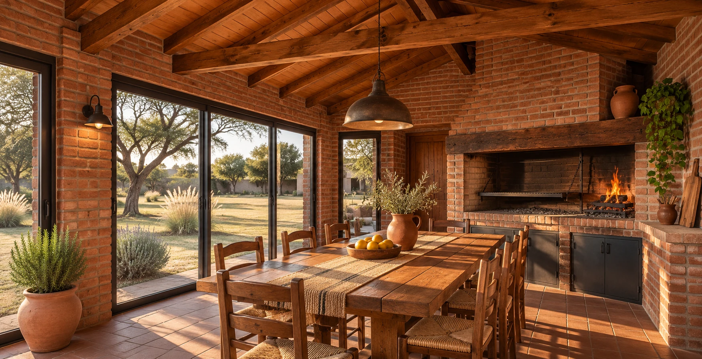
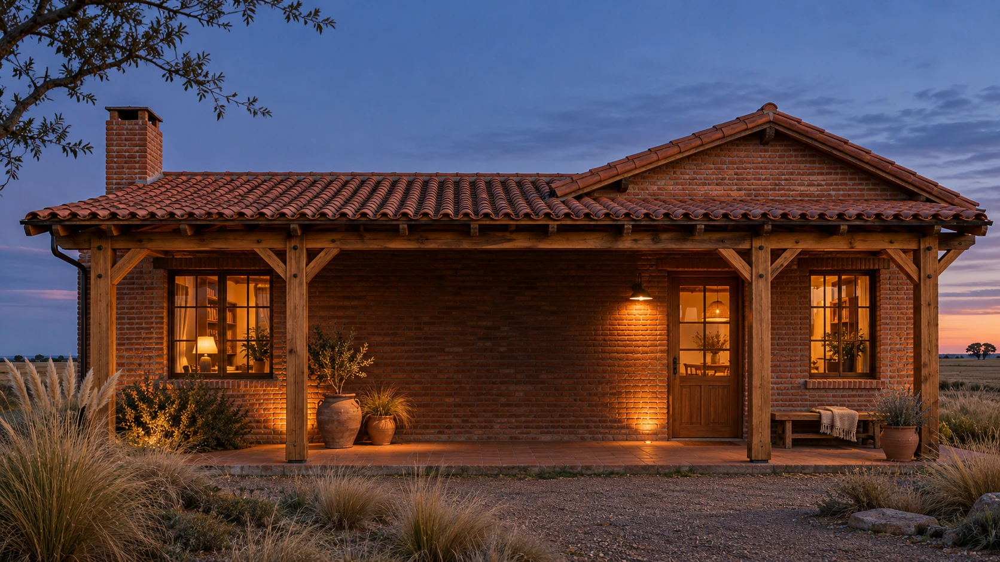

Tata Construcciones en Bahía Blanca
↓Ladrillo visto. Madera. Hogar.
El lugar donde
empieza tu casa.
Construimos viviendas, ampliaciones y quinchos en Bahía Blanca y alrededores. Nos especializamos en construcción tradicional de estilo rústico, con la calidez del ladrillo visto y la madera.
Acompañamos tu proyecto desde los planos municipales hasta las terminaciones, con una propuesta llave en mano y un alcance definido por contrato.
Contanos tu proyectoDe la obra a los detalles
Así construimos.
Tocá una imagen para verla en detalle.

Para tu próxima etapa
Un proyecto
a tu medida.
Modelos base para una primera vivienda, una ampliación o un quincho. Conversamos sobre las medidas y el uso para definir la propuesta.
Conocer servicios ↗Desde adentro
La obra en movimiento.
Bahía Blanca y alrededores
Cerca de tu proyecto.
Trabajamos en Barrio Patagonia, Aldea Romana, Cerri, Harding Green, San José, Don Ramiro y loteos de la región.